In China Employee Termination: Pulse Risk-Atlas Brief for Foreign Employers (2026 Testing Run)
Key takeaways
- Use a risk-atlas map to decide termination routes in China: legal fit first, execution terrain second.
- Foreign employers should assess four linked zones together: route legality, evidence integrity, communication coherence, and settlement certainty.
- Most avoidable disputes occur when teams choose a route before checking whether their evidence and settlement controls can support it.
- Payroll and IIT handling are core risk zones, not after-action accounting tasks.
- A map-and-route model helps non-China stakeholders make faster, clearer decisions.
Pulse lead
Foreign companies often approach China termination with a policy-first lens and a process-second lens. In practice, that order can create risk. A route that appears valid in abstract legal terms may still fail under real review if evidence quality is weak, manager communication drifts, or payout assumptions are unstable. The operational terrain matters as much as the route label.
This run uses a risk-atlas format. Instead of a timeline or checklist, it maps the main risk zones and shows how to choose a safer route through them.
Plain-language legal/regulatory context first
China’s Labor Contract Law sets boundaries for employer-initiated termination routes. Implementation regulations and SPC interpretation shape practical dispute review, especially around procedural fairness and evidentiary reliability. For foreign employers, the practical implication is straightforward: legal route validity is necessary but not sufficient. Defensibility depends on coherence from route selection through communication and settlement completion.
Risk atlas: four primary zones
Zone 1: Route legality zone
This zone asks whether the selected path is legally coherent for the facts at hand.
Low-risk markers:
- One route narrative is used consistently across legal, HR, and manager documents.
- Risk grade and escalation thresholds are explicit.
High-risk markers:
- Route rationale changes by audience.
- Legal assumptions are broad while facts are narrow or contested.
Zone 2: Evidence integrity zone
This zone tests whether the case can be evidenced without reconstruction.
Low-risk markers:
- Dated, objective, source-linked records.
- Chronology is complete and consistent.
High-risk markers:
- Fragmented evidence across inboxes/chats.
- Late-added records with unclear origin.
Zone 3: Communication coherence zone
This zone checks whether what is said, written, and logged remains aligned.
Low-risk markers:
- Script, notice, and meeting protocol are synchronized.
- Bilingual control text is designated where needed.
High-risk markers:
- Manager improvisation under pressure.
- Translation drift changes legal meaning.
Zone 4: Settlement certainty zone
This zone confirms whether payout and tax closure logic is stable before action.
Low-risk markers:
- Severance/wage/leave/IIT model is version-locked and approved.
- Payment timing and funding path are confirmed.
High-risk markers:
- Settlement logic changes after communication prep.
- IIT assumptions differ between payroll and finance.
Route planning across the atlas
Route A: Negotiated/mutual separation route
Often safer when evidence quality is medium and business needs outcome predictability.
Best use case: operational urgency with incomplete unilateral-evidence confidence.
Route B: Unilateral statutory route
Best reserved for high evidence confidence and strong process control.
Best use case: clear legal basis + complete records + disciplined communication chain.
Route C: Restructuring-linked route
Requires stronger planning across all four zones and tighter stakeholder control.
Best use case: broader organization change with explicit governance structure.
Practical implications for foreign employers
- A map view improves decision quality by showing where risk is concentrated before execution.
- HQ/local alignment improves when route choice is tied to visible zone readiness.
- Leadership can prioritize remediation budget where risk intensity is highest.
- City-specific variance can be mapped as route uncertainty multipliers.
For cross-border teams, this approach prevents “template confidence” errors: teams stop assuming one policy form works everywhere and start adapting route choice to evidence and settlement realities. It also improves board communication, because leadership can see which zone is driving delay and whether the delay is risk-reducing or merely administrative.
Daily operations SOP (map-and-route)
- Build case atlas with zone scores (legal, evidence, communication, settlement).
- Select candidate route and test zone compatibility.
- Assign zone owners and remediation deadlines.
- Freeze settlement and communication controls before external steps.
- Execute with zone-status snapshots (pre/during/post).
- Close with post-route review and archive completeness check.
Required document checklist
- Route memo + legal signoff
- Zone scoring sheet + rationale notes
- Evidence index + chronology verification
- Communication package + language control note
- Settlement worksheet + IIT method + version ID
- Exception matrix + override approvals
- Execution log + service/payment proof
- Final closure audit + archive manifest
Exception handling playbook
- Zone score spikes before execution: hold and reroute or remediate.
- New facts change legal fit: reopen route zone and dependent zones.
- Settlement zone unstable near execution: suspend outward communication.
- Override on high-risk zone: require documented risk acceptance and expiry review.
System implementation notes
Add atlas fields to HRIS/payroll:
- zone scores and trend direction
- owner + closure SLA per zone
- route-choice rationale and revision log
- settlement lock + IIT fields
- override trail
- final route integrity score
Recommended minimum data model
- Case: entity, city, route type, risk tier.
- Zone table: zone id, score, previous score, changed-by, reason.
- Action table: action owner, due date, closure evidence.
- Override table: approver, rationale, validity period.
- Closure table: final scores, unresolved items, archive confirmation.
Common mistakes and prevention
- Mistake: choosing route before scoring zones.
Prevention: mandatory atlas scoring before route lock.
- Mistake: underweighting settlement zone.
Prevention: non-waivable settlement lock requirement.
- Mistake: static scoring despite new facts.
Prevention: automatic re-score trigger on material changes.
What to do now
- Pilot risk-atlas scoring on three active cases.
- Define zone thresholds and escalation ownership.
- Make settlement and route zones non-waivable.
- Add city-level variance multipliers.
- Train managers on communication-zone controls.
- Track zone drift frequency weekly.
- Audit disputes against prior zone scores.
- Update SOPs and templates.
- Report atlas KPIs to leadership monthly.
- Recalibrate thresholds in each hourly quality loop.
Atlas KPI dashboard
Track: high-risk zone count at first assessment, average remediation time by zone, override rate by zone, and post-action incidents linked to pre-execution zone weaknesses. Add prevention KPI: reroute rate after initial atlas scoring.
For leadership reporting, split this into:
- Weekly operations view: open high-risk zones, unresolved owners, SLA breaches.
- Monthly governance view: repeat zone failures, city-level variance, and override quality trends.
This split improves decision value by separating immediate execution risk from structural governance drift.
What to watch next
- Continued focus on route-process coherence.
- Persistent sensitivity around settlement and IIT transparency.
- Ongoing city-level variation in practical review standards.
FAQ
Is risk-atlas scoring legally required?
No. It is an execution-governance model.
Can small teams use it?
Yes, with simplified zone scoring and clear ownership.
When should external PRC counsel be mandatory?
High-risk unilateral, restructuring, refusal, protected-status, and multi-city complex cases.
Legal depth appendix
Anchors: PRC Labor Contract Law, State Council implementation regulations, SPC labor-dispute interpretation. Practical rule: route legality, procedural fairness, and documentary reliability must align through settlement completion.
Disclaimer
Informational only, not legal advice. Seek qualified PRC counsel for case-specific actions.
Sources
- NPC Labor Contract Law (English): http://www.npc.gov.cn/zgrdw/englishnpc/Law/2007-12/13/content_1384064.htm
- State Council Implementation Regulations: https://www.gov.cn/gongbao/content/2008/content_1124615.htm
- SPC labor dispute interpretation: https://www.court.gov.cn/fabu/xiangqing/243981.html
- China Briefing termination guide: https://www.china-briefing.com/news/employee-termination-in-china/
- Littler employment-law update: https://www.littler.com/news-analysis/asap/key-recent-developments-chinas-employment-law-china-us-comparative-perspective
- PwC PRC IIT summary: https://taxsummaries.pwc.com/peoples-republic-of-china/individual/taxes-on-personal-income
Need local employment support in China?
If you need a compliance-first partner for hiring, payroll, and risk controls in China, China-Payroll.com can help evaluate the right setup.
Image Prompt Pack
Create a 16:9 hero image for article title: 'In China Employee Termination: Pulse Risk-Atlas Brief for Foreign Employers (2026 Testing Run)'. Scene: global operations team evaluating workforce model options for China market entry. Include motifs: decision matr…